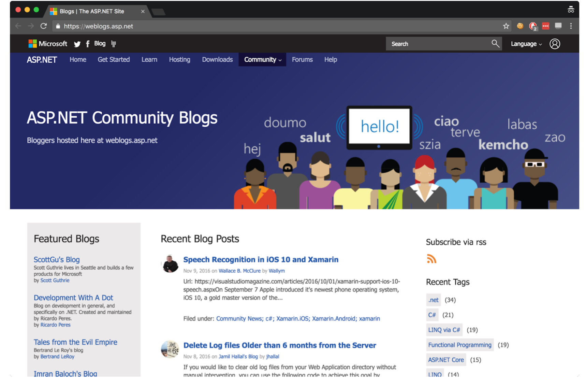

通过将ASP.NET Core Web Server添加到您的.NET Core应用程序，您的应用程序可以作为Web应用程序运行。ASP.NET Core由许多小型库组成，您可以选择这些小型库来为应用程序提供不同的功能。您几乎不需要添加所有库，仅添加所需的库。一些库是通用的，并且实际上会出现在您创建的每个应用程序中，例如用于读取配置文件或执行日志记录的库。其他库基于这些基本功能来提供特定于您ASP.NET Core中使用的大多数库都可以在GitHub的Microsoft ASP.NET Core组织存储库中找到，网址为https://github.com/aspnet.您可以在此处找到核心库，例如Kestrel Web服务和日志记录库，以及更多外围设备库，例如第三方身份验证库。 正如通用库所建议的那样，所有ASP,NET Core应用程序都遵循类似的基本配置设计，但是总体而言，该框架非常灵活，使您可以自由创建自己的代码约定。这些通用库，基于他们的扩展库以及他们促进的设计约定构成了有点晦涩难懂的术语ASP.NET Core.
1.2 何时选择ASP.NET Core
您现在应该大致了解了什么是ASP.NET Core及其设计方式。但是问题仍然存在：您应该使用他吗？微软将在未来大力推广ASP.NET Core作为首选的Web框架，但是对于任何开发人员或公司来说，切换或学习新的Web堆栈都是一个很大的挑战。本节介绍ASP.NET Core的一些亮点，以及使用它构建的应用程序种类以及应避免的应用程序种类提供建议。
1.2.1 您可以构建哪种类型的应用程序?
ASP.NET Core提供了可用于各种应用程序的通用Web框架。显然，他可以用于构建丰富，动态的网站，无论是电子商务网站，基于内容的网站还是大型的n层应用程序-与ASP.NET的早期版本几乎相同。 当前，可用于构建这类复杂应用程序的第三方库数量相对有限，但扔在积极开发中。许多开发人员正在努力移现在的库与ASP.NET Core配合使用，这需要更多的时间才能使用。例如，开源内容管理系统（CMS）Orchard（图1.4）目前作为Orchard Core的Beta版本提供，运行在ASP.NET Core和.NET Core上。 服务器端渲染的传统Web应用程序是ASP.NET开发的基础，都与以前版本的ASP.NET和ASP.NET一起使用

*ASP.NET社区博客网站(https://weblogs.asp.net)是使用Orchard CMS构建的。Orchard 2是ASP.NET Core的测试版，ASP.NET Core开发*
此外，使用ASP.NET Core可以轻松创建单页应用程序（SPA）,该应用程序使用通常与REST服务器通信的客户端框架。无论您使用的事angular，ember，react还是其他客户端框架，都可以轻松创建一个ASP.NET Core应用程序作为服务器端API。
DEFINITION REST代表代表状态转移。 RESTful应用程序通常使用轻量级和无状态的HTTP调用来读取，发布（创建/更新）和删除数据。
ASP.NET Core不仅限于创建RESTful服务。根据您的要求，很容易为您的应用程序创建Web服务或远程过程调用（RPC）样式的服务，如图1.5所示。在最简单的情况下，您的应用程序可能只公开一个端点，从而将其范围缩小为微服务。凭借其跨平台支持和轻量级设计，ASP.NET Core非常适合构建简单服务。 选择平台时应考虑多个因素，但并非所有因素都是技术因素。一个例子是您可以期望其创建者提供的支持水平。对于某些组织而言，这可能是采用开源软件的主要障碍之一。幸运的是，微软已承诺为每个产品提供全面支持。